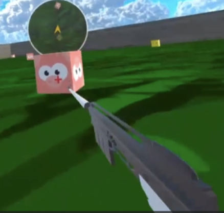
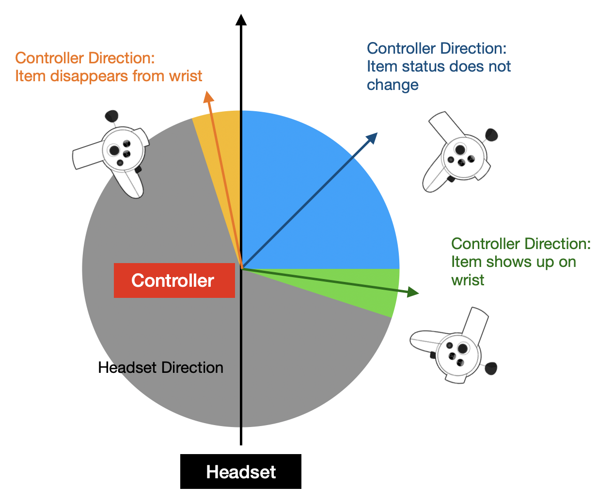

Hunt & Harvest: VR Game
Hunt & Harvest is a VR game where the player hunts animals and collects vegetables. The user’s goal is to collect the animals or vegetables specified in the quota, in their exact types and amounts. In order to do this, the player must approach the targets using the necessary travel and wayfinding techniques (e.g. minimap) and subsequently capture the targets using the provided selection and manipulation techniques (e.g. tranquilizer, knife, basket). These techniques are further discussed below.
I developed the functions for tool-switching, tranquilizing, and triggering the minimap and instruction using the wrist angle ("looking at watch" motion). I also assisted in resolving merge conflicts and managing global variables.
Tool Switching
The player can switch between tools using the ‘A’ button. Once the ‘A’ button is pressed, mini examples of available tools will appear next to the player’s controller. Still pressing the mini examples, the player can hover over the desired tool and let go of the button to select that tool. When the player is hovering over a tool, the tool will turn red to indicate that it is ready to be selected. If the player is not hovering over the tool, it will remain its original color. Once the ‘A’ button is released, the mini examples will disappear. If the ‘A’ button is released and the player is not hovering over any examples, the player will continue to hold whatever tool they had before.
Tranquilizer
In the meat-lover mode, players can choose to use the tool, Tranquilizer. Players can shoot the animals from a distance using the tranquilizer, approach the tranquilized animal, and put it into the basket to collect it. The tranquilizer has a maximum distance it can shoot from, and a crosshair target will be displayed on the animal when the player is in a shootable range from the animal.
Triggering Minimap and Instructions
The player can load the minimap by displaying it on their left wrist with specific wrist motion. The player can fold their left and/or right arm, so that the controller is perpendicular to the headset direction in birds eye view, to toggle minimap and/or instruction respectively. Once the item is toggled it should be displayed on top of the player’s wrist. The player can remove the items from their view by unfolding their arm so that the controller and headset direction aligns. This means that the item will stay on the player’s wrist once spawned, as long as the player’s wrist angle is less than the aligned angle. Below is a diagram that shows the mechanism for left hand, and right hand would be the same but flipped horizontally With the minimap on the player’s wrist, the player can flexibly adjust the size of the wrist minimap by scaling it. The player can scale it by grabbing the minimap with two hands and moving the right hand outwards for expanding or inwards for shrinking. Once the minimap is scaled, it will stay scaled.
For full documentation, click the button below.
Full Documentation